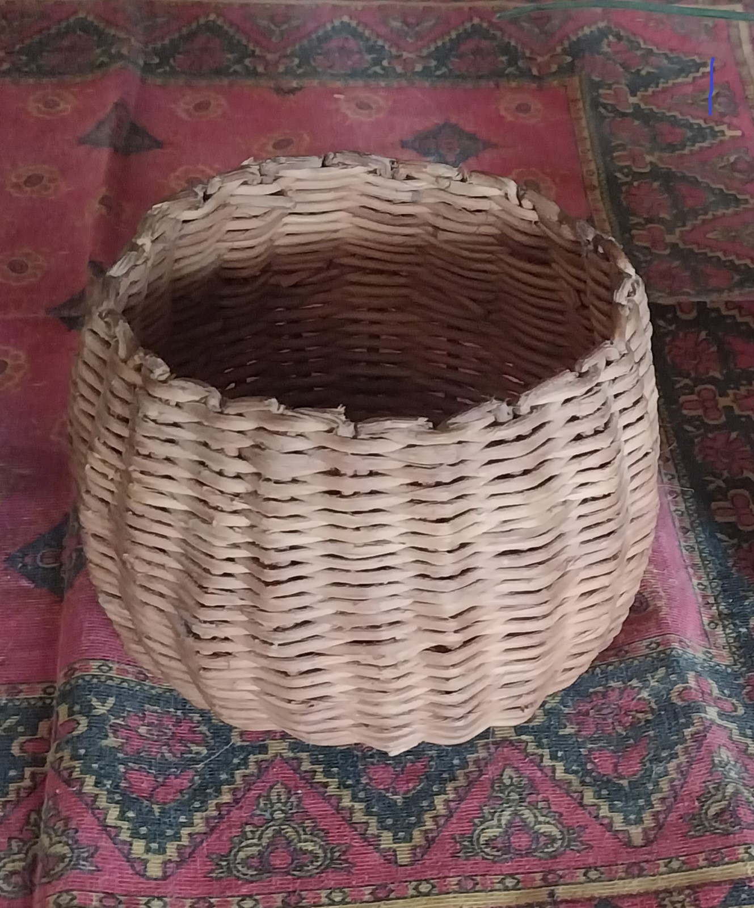

BIENVENIDOS A ENTRELAZANDO CULTURA Y TRADICIÓN
En este espacio nos enfocamos en preservar y promover las técnicas artesanales de trabajo con bejuco, una tradición que se sigue conservando en la comunidad de San Bartolomé Ayautla.
Nuestro objetivo es compartir la pasión y el respeto por este arte ancestral y conectar a los artesanos locales con una audiencia global.
Nos dedicamos a la promoción y difusión de las artesanías con bejuco.
Descubre la riqueza cultural y la belleza de nuestras tradiciones.

“Cada artesanía cuenta una historia, cada tejido conserva una tradición.”